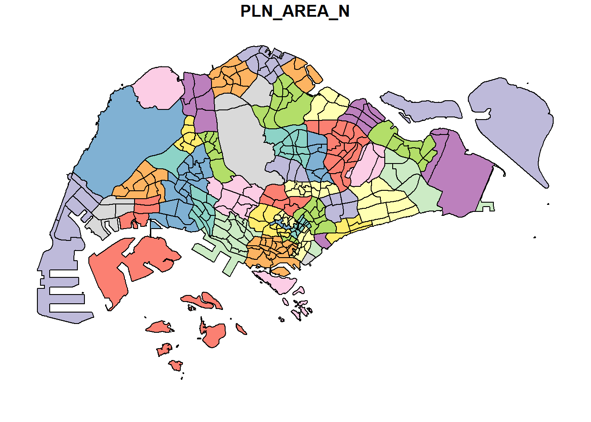
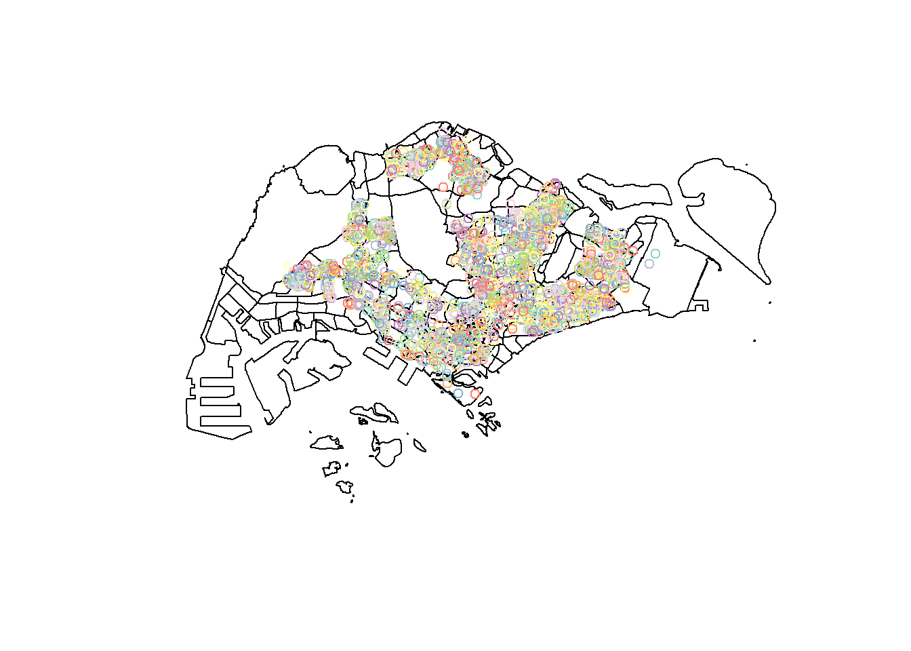
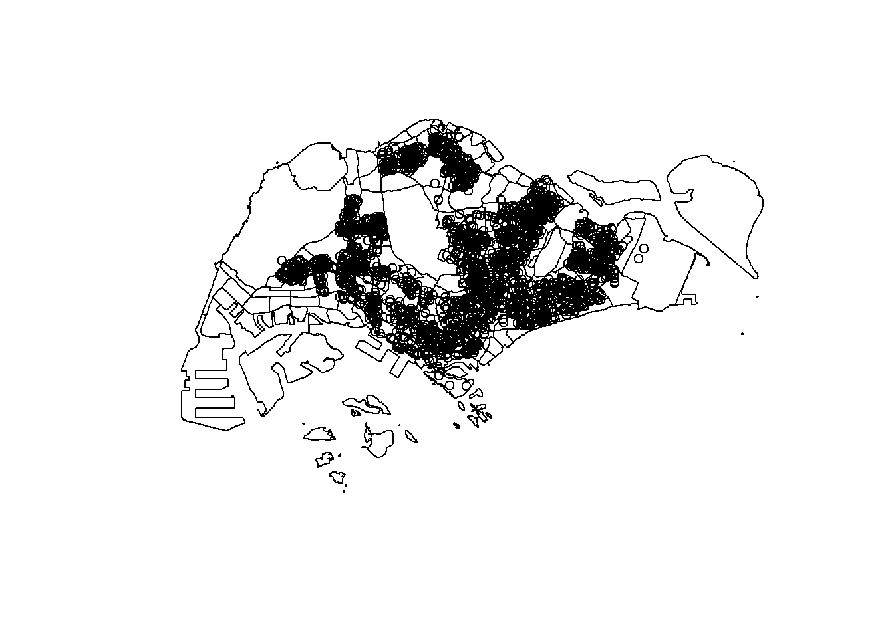
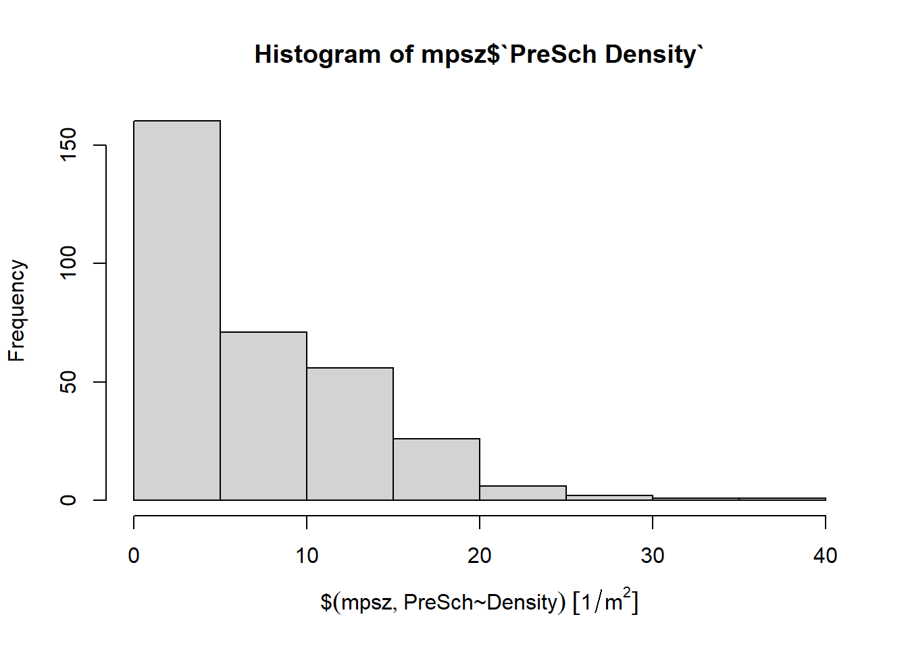
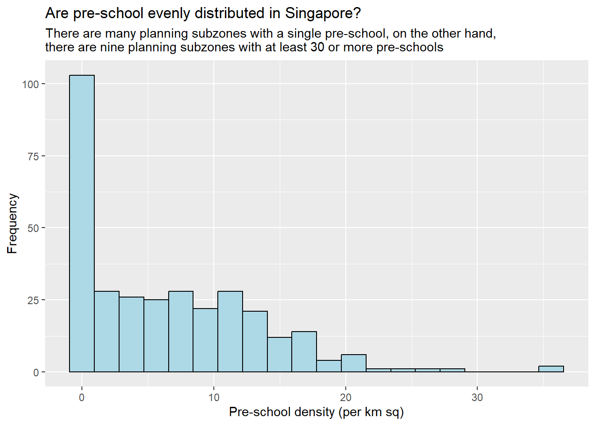

pacman::p_load(sf, tidyverse)Hands-on Exercise 1(A): Geospatial Data Science with R
Geospatial Data Science is a process of importing, wrangling, integrating, and processing geographically referenced data sets.
In this hands-on exercise, we will learn how to perform geospatial data science tasks in R by using sf package.
1.1 Learning Outcome
This exercise aims to cover the following:
- installing and loading sf and tidyverse packages into R environment,
- importing geospatial data by using appropriate functions of sf package,
- importing aspatial data by using appropriate function of readr package,
- exploring the content of simple feature data frame by using appropriate Base R and sf functions,
- assigning or transforming coordinate systems by using using appropriate sf functions,
- converting an aspatial data into a sf data frame by using appropriate function of sf package,
- performing geoprocessing tasks by using appropriate functions of sf package,
- performing data wrangling tasks by using appropriate functions of dplyr package and
- performing Exploratory Data Analysis (EDA) by using appropriate functions from ggplot2 package.
1.2 Data Acquisition
In this hands-on exercise, we will be using the following data sets:
| Dataset | Source | Description |
|---|---|---|
| Master Plan 2014 Subzone Boundary (No Sea) | data.gov.sg | Geospatial boundaries for Singapore’s planning subzones |
| Pre-Schools Location | data.gov.sg | Location data for pre-schools in Singapore |
| Cycling Path | LTA DataMall | Geospatial data for cycling paths in Singapore |
| Singapore Airbnb Listings | Inside Airbnb | Listing data for Airbnb properties in Singapore |
Note
The Master Plan 2014 Subzone Boundary and Pre-Schools Location data sets were downloaded in GeoJSON format, as data.gov.sg no longer offers these particular data sets in Shapefile or KML format respectively.
1.2.1 Extracting the geospatial data sets
To get started, create a new folder called Hands-on_Ex in a working directory.
Next, create a new sub-folder called Hands-on_Ex01 in the newly created Hands-on_Ex folder.
In the Hands-on_Ex01 folder, create a sub-folder called data. Then, inside the data sub-folder, create two sub-folders and name them geospatial and aspatial respectively.
Place Master Plan 2014 Subzone Boundary (No Sea), Pre-Schools Location and Cycling Path zipped files into geospatial sub-folder and unzipped them. Copy the unzipped files from their respective sub-folders and place them inside geospatial sub-folder.
1.2.2 Extracting the aspatial data set
Extract the downloaded listings.csv.gz file, and move the resulting listings.csv into the aspatial sub-folder.
1.3 Getting Started
In this hands-on exercise, two R packages will be used. They are:
- sf for importing, managing, and processing geospatial data, and
- tidyverse for performing data science tasks such as importing, wrangling and visualising data.
Use the code chunk below to load the necessary R packages into R.
1.4 Importing Geospatial Data
In this section, three geospatial datasets are imported into R using st_read() of the sf package:
MP14_SUBZONE_NO_SEA_PL, a polygon feature layer representing Singapore’s planning subzones (Master Plan 2014, No Sea variant)CyclingPathGazette, a line feature layer representing Singapore’s cycling pathsPreSchoolsLocation, a point feature layer representing pre-school locations
1.4.1 Importing polyline feature data in GeoJSON format (Master Plan 2024 Subzone Boundary)
The code chunk below uses st_read() function of sf package to import MP14_SUBZONE_NO_SEA_PL into R as a polygon feature data frame. Since the input data is in GeoJSON format, only a single dsn (data source name) argument is needed to define the file path.
mpsz = st_read(dsn = "data/geospatial/MasterPlan2014SubzoneBoundaryNoSea.geojson")Reading layer `MP14_SUBZONE_NO_SEA_PL' from data source
`C:\yxlinn\ISSS626-GAA\Hands-on_Ex\Hands-on_Ex01\data\geospatial\MasterPlan2014SubzoneBoundaryNoSea.geojson'
using driver `GeoJSON'
Simple feature collection with 323 features and 13 fields
Geometry type: MULTIPOLYGON
Dimension: XY
Bounding box: xmin: 103.6057 ymin: 1.158699 xmax: 104.0885 ymax: 1.470775
Geodetic CRS: WGS 84The message above reveals that the geospatial objects are multipolygon features. There are a total of 323 multipolygon features and 13 fields in mpsz simple feature data frame. mpsz is in wgs84 geodetic coordinates system — a geographic coordinate system using latitude/longitude in degrees. The bounding box provides the x extent and y extent of the data.
1.4.2 Importing polyline feature data in shapefile format (Cycling Path)
The code chunk below uses st_read() function of sf package to import CyclingPath shapefile into R as a line feature data frame.
cyclingpath = st_read(dsn = "data/geospatial",
layer = "CyclingPathGazette")Reading layer `CyclingPathGazette' from data source
`C:\yxlinn\ISSS626-GAA\Hands-on_Ex\Hands-on_Ex01\data\geospatial'
using driver `ESRI Shapefile'
Simple feature collection with 4830 features and 7 fields
Geometry type: MULTILINESTRING
Dimension: XY
Bounding box: xmin: 11721.1 ymin: 27550.13 xmax: 42809.37 ymax: 49702.59
Projected CRS: SVY21The message above reveals that the geospatial objects are multilinestring features. There are a total of 4,830 multilinestring features and 7 fields in cyclingpath simple feature data frame. This data set is in svy21 projected coordinates system, where its coordinates are expressed in metres.
1.4.3 Importing GIS data in GeoJSON format (Pre-school Locations)
The PreSchoolsLocation is in GeoJSON format. The code chunk below will be used to import PreSchoolsLocation into R.
preschool = st_read(dsn = "data/geospatial/PreSchoolsLocation.geojson")Reading layer `PreSchoolsLocation' from data source
`C:\yxlinn\ISSS626-GAA\Hands-on_Ex\Hands-on_Ex01\data\geospatial\PreSchoolsLocation.geojson'
using driver `GeoJSON'
Simple feature collection with 2290 features and 2 fields
Geometry type: POINT
Dimension: XYZ
Bounding box: xmin: 103.6878 ymin: 1.247759 xmax: 103.9897 ymax: 1.462134
z_range: zmin: 0 zmax: 0
Geodetic CRS: WGS 84The message above reveals that preschool is a point feature data frame. There are a total of 2290 features and 2 fields. Similar to mpsz, preschool is in wgs84 coordinates system.
1.5 Checking the Content of A Simple Feature Data Frame
1.5.1 Working with st_geometry()
The column in the sf data.frame that contains the geometries is a list of class sfc. We can retrieve the geometry list-column in this case by mpsz$geom or mpsz[[1]], but the more general way uses st_geometry() as shown in the code chunk below.
st_geometry(mpsz)Geometry set for 323 features
Geometry type: MULTIPOLYGON
Dimension: XY
Bounding box: xmin: 103.6057 ymin: 1.158699 xmax: 104.0885 ymax: 1.470775
Geodetic CRS: WGS 84
First 5 geometries:MULTIPOLYGON (((103.8432 1.284328, 103.8428 1.2...MULTIPOLYGON (((103.8221 1.280494, 103.8221 1.2...MULTIPOLYGON (((103.8438 1.285079, 103.8436 1.2...MULTIPOLYGON (((103.8496 1.284119, 103.8496 1.2...MULTIPOLYGON (((103.8525 1.286166, 103.8524 1.2...1.5.2 Working with glimpse()
Beyond the basic geospatial feature information, an sf data frame also holds associated attribute information. The code chunk below uses glimpse() function of dplyr package to inspect this attribute data.
glimpse(mpsz)Rows: 323
Columns: 14
$ OBJECTID_1 <int> 21, 22, 23, 24, 25, 26, 27, 28, 29, 30, 31, 32, 33, 34, 3…
$ SUBZONE_NO <int> 2, 2, 3, 4, 5, 4, 10, 12, 4, 6, 1, 1, 3, 8, 3, 7, 9, 2, 1…
$ SUBZONE_N <chr> "PEOPLE'S PARK", "BUKIT MERAH", "CHINATOWN", "PHILLIP", "…
$ SUBZONE_C <chr> "OTSZ02", "BMSZ02", "OTSZ03", "DTSZ04", "DTSZ05", "OTSZ04…
$ CA_IND <chr> "Y", "N", "Y", "Y", "Y", "Y", "N", "Y", "N", "Y", "Y", "Y…
$ PLN_AREA_N <chr> "OUTRAM", "BUKIT MERAH", "OUTRAM", "DOWNTOWN CORE", "DOWN…
$ PLN_AREA_C <chr> "OT", "BM", "OT", "DT", "DT", "OT", "BM", "DT", "BM", "DT…
$ REGION_N <chr> "CENTRAL REGION", "CENTRAL REGION", "CENTRAL REGION", "CE…
$ REGION_C <chr> "CR", "CR", "CR", "CR", "CR", "CR", "CR", "CR", "CR", "CR…
$ INC_CRC <chr> "B4120D23006C932A", "1C51019439A68700", "0FF1661344C84AED…
$ FMEL_UPD_D <chr> "20160511160621", "20160511160621", "20160511160621", "20…
$ SHAPE_1.AREA <dbl> 93140.44, 411722.82, 587222.68, 39437.94, 188767.49, 1330…
$ SHAPE_1.LEN <dbl> 1822.1927, 3074.9632, 4297.5999, 871.5549, 1872.7522, 160…
$ geometry <MULTIPOLYGON [°]> MULTIPOLYGON (((103.8432 1...., MULTIPOLYGON…glimpse() report reveals the data type of each fields. For example, SHAPE_1.AREA and SHAPE_1.LEN fields are in double-precision values.
1.5.3 Working with head()
While glimpse() gives a quick overview of all fields, sometimes it’s useful to view the complete information of individual features in full. This can be done using head() function of Base R, as shown in the code chunk below.
head(mpsz, n=5)Simple feature collection with 5 features and 13 fields
Geometry type: MULTIPOLYGON
Dimension: XY
Bounding box: xmin: 103.8131 ymin: 1.274155 xmax: 103.8532 ymax: 1.286506
Geodetic CRS: WGS 84
OBJECTID_1 SUBZONE_NO SUBZONE_N SUBZONE_C CA_IND PLN_AREA_N PLN_AREA_C
1 21 2 PEOPLE'S PARK OTSZ02 Y OUTRAM OT
2 22 2 BUKIT MERAH BMSZ02 N BUKIT MERAH BM
3 23 3 CHINATOWN OTSZ03 Y OUTRAM OT
4 24 4 PHILLIP DTSZ04 Y DOWNTOWN CORE DT
5 25 5 RAFFLES PLACE DTSZ05 Y DOWNTOWN CORE DT
REGION_N REGION_C INC_CRC FMEL_UPD_D SHAPE_1.AREA
1 CENTRAL REGION CR B4120D23006C932A 20160511160621 93140.44
2 CENTRAL REGION CR 1C51019439A68700 20160511160621 411722.82
3 CENTRAL REGION CR 0FF1661344C84AED 20160511160621 587222.68
4 CENTRAL REGION CR 615D4EDDEF809F8E 20160511160621 39437.94
5 CENTRAL REGION CR 72107B11807074F4 20160511160621 188767.49
SHAPE_1.LEN geometry
1 1822.1927 MULTIPOLYGON (((103.8432 1....
2 3074.9632 MULTIPOLYGON (((103.8221 1....
3 4297.5999 MULTIPOLYGON (((103.8438 1....
4 871.5549 MULTIPOLYGON (((103.8496 1....
5 1872.7522 MULTIPOLYGON (((103.8525 1....
Note
One of the useful arguments of head() is that it allows the user to select the number of records to display (i.e. the n argument).
1.6 Plotting the Geospatial Data
Beyond reviewing feature information, visualising the geospatial features is equally important in geospatial data science. The code chunk below uses plot() function of Base R Graphics to do so.
plot(mpsz)
Note
The default plot() of an sf object is a multi-plot of all attributes, up to a reasonable maximum as shown above.
We can also plot only the geometry by using the code chunk below.
plot(st_geometry(mpsz))
Alternatively, a specific attribute of the sf object can also be plotted on its own, as shown in the code chunk below.
plot(mpsz["PLN_AREA_N"])
Tip
plot() is appropriate for a quick, exploratory look at geospatial data. For higher cartographic-quality maps, other R packages such as tmap should be used.
Next, to see how two data sets relate spatially, the preschool layer can be plotted on top of the mpsz layer, as shown in the code chunk below.
plot(st_geometry(mpsz))
plot(preschool, add = TRUE)
1.7 Working with Projection
Map projection is an important property of a geospatial data. In order to perform geoprocessing using two geospatial data, we need to ensure that both geospatial data are projected using similar coordinate system.
This section covers how to convert a simple feature data frame from one coordinate system to another — a process known as projection transformation.
1.7.1 Assigning EPSG code to a simple feature data frame
One common issue that can happen during importing geospatial data into R is that the coordinate system of the source data is either missing (such as due to missing .proj for ESRI shapefile) or wrongly assigned during the import process.
This is an example of the coordinate system of cyclingpath simple feature data frame, examined using st_crs() of sf package, as shown in the code chunk below.
st_crs(cyclingpath)Coordinate Reference System:
User input: SVY21
wkt:
PROJCRS["SVY21",
BASEGEOGCRS["WGS 84",
DATUM["World Geodetic System 1984",
ELLIPSOID["WGS 84",6378137,298.257223563,
LENGTHUNIT["metre",1]],
ID["EPSG",6326]],
PRIMEM["Greenwich",0,
ANGLEUNIT["Degree",0.0174532925199433]]],
CONVERSION["unnamed",
METHOD["Transverse Mercator",
ID["EPSG",9807]],
PARAMETER["Latitude of natural origin",1.36666666666667,
ANGLEUNIT["Degree",0.0174532925199433],
ID["EPSG",8801]],
PARAMETER["Longitude of natural origin",103.833333333333,
ANGLEUNIT["Degree",0.0174532925199433],
ID["EPSG",8802]],
PARAMETER["Scale factor at natural origin",1,
SCALEUNIT["unity",1],
ID["EPSG",8805]],
PARAMETER["False easting",28001.642,
LENGTHUNIT["metre",1],
ID["EPSG",8806]],
PARAMETER["False northing",38744.572,
LENGTHUNIT["metre",1],
ID["EPSG",8807]]],
CS[Cartesian,2],
AXIS["(E)",east,
ORDER[1],
LENGTHUNIT["metre",1,
ID["EPSG",9001]]],
AXIS["(N)",north,
ORDER[2],
LENGTHUNIT["metre",1,
ID["EPSG",9001]]]]Although cyclingpath data frame is projected in svy21, reading to the end of the print reveals that the EPSG is 9001. This is a wrong EPSG code, because the correct EPSG code for svy21 should be 3414.
In order to assign the correct EPSG code to cyclingpath data frame, st_set_crs() of sf package is used as shown in the code chunk below.
cyclingpath <- st_set_crs(cyclingpath, 3414)st_crs(cyclingpath)Coordinate Reference System:
User input: EPSG:3414
wkt:
PROJCRS["SVY21 / Singapore TM",
BASEGEOGCRS["SVY21",
DATUM["SVY21",
ELLIPSOID["WGS 84",6378137,298.257223563,
LENGTHUNIT["metre",1]]],
PRIMEM["Greenwich",0,
ANGLEUNIT["degree",0.0174532925199433]],
ID["EPSG",4757]],
CONVERSION["Singapore Transverse Mercator",
METHOD["Transverse Mercator",
ID["EPSG",9807]],
PARAMETER["Latitude of natural origin",1.36666666666667,
ANGLEUNIT["degree",0.0174532925199433],
ID["EPSG",8801]],
PARAMETER["Longitude of natural origin",103.833333333333,
ANGLEUNIT["degree",0.0174532925199433],
ID["EPSG",8802]],
PARAMETER["Scale factor at natural origin",1,
SCALEUNIT["unity",1],
ID["EPSG",8805]],
PARAMETER["False easting",28001.642,
LENGTHUNIT["metre",1],
ID["EPSG",8806]],
PARAMETER["False northing",38744.572,
LENGTHUNIT["metre",1],
ID["EPSG",8807]]],
CS[Cartesian,2],
AXIS["northing (N)",north,
ORDER[1],
LENGTHUNIT["metre",1]],
AXIS["easting (E)",east,
ORDER[2],
LENGTHUNIT["metre",1]],
USAGE[
SCOPE["Cadastre, engineering survey, topographic mapping."],
AREA["Singapore - onshore and offshore."],
BBOX[1.13,103.59,1.47,104.07]],
ID["EPSG",3414]]
Note
Notice that the EPSG code is now 3414.
1.7.2 Transforming the projection of mpsz from wgs84 to svy21
In geospatial analytics, it is common to transform data from a geographic coordinate system to a projected coordinate system, since geographic coordinate systems are not appropriate when analysis requires distance and/or area measurements.
The code chunk below performs the projection transformation on mpsz.
mpsz <- st_transform(mpsz,
crs = 3414)st_geometry(mpsz)Geometry set for 323 features
Geometry type: MULTIPOLYGON
Dimension: XY
Bounding box: xmin: 2667.538 ymin: 15748.72 xmax: 56396.44 ymax: 50256.33
Projected CRS: SVY21 / Singapore TM
First 5 geometries:MULTIPOLYGON (((29099.02 29640.03, 29058.14 296...MULTIPOLYGON (((26750.09 29216.1, 26750.09 2922...MULTIPOLYGON (((29161.2 29723.07, 29147.2 29734...MULTIPOLYGON (((29814.11 29616.89, 29814.87 296...MULTIPOLYGON (((30137.77 29843.19, 30118.74 298...
Note
The output confirms that mpsz is in svy21 projected coordinate system. Furthermore, referring to the Bounding box, the values are greater than the 0–360 decimal degree range commonly used by most of the geographic coordinate systems.
1.7.3 Transforming the projection of preschool from wgs84 to svy21
The code chunk below performs the projection transformation on preschool.
preschool <- st_transform(preschool,
crs = 3414)st_geometry(preschool)Geometry set for 2290 features
Geometry type: POINT
Dimension: XYZ
Bounding box: xmin: 11810.03 ymin: 25596.33 xmax: 45404.24 ymax: 49300.88
z_range: zmin: 0 zmax: 0
Projected CRS: SVY21 / Singapore TM
First 5 geometries:POINT Z (25089.46 31299.16 0)POINT Z (27189.07 32792.54 0)POINT Z (28844.56 36773.76 0)POINT Z (24821.92 46303.16 0)POINT Z (28637.82 35038.49 0)
Note
The output confirms that preschool is now in svy21 projected coordinate system.
With both mpsz and preschool now in the same svy21 coordinate system, the preschool layer can be plotted on top of the mpsz layer once again.
plot(st_geometry(mpsz))
plot(st_geometry(preschool), add = TRUE)
1.8 Importing and Converting An Aspatial Data
In practice, it is not unusual to come across data such as listings from Inside Airbnb. This kind of data is referred to as aspatial data — it is not geospatial data, but among the data fields, there are two fields that capture the x- and y-coordinates of the data points.
This section covers how to import aspatial data into R and save it as a tibble data frame, before converting it into a simple feature data frame.
1.8.1 Importing the aspatial data
Since the listings data set is in csv file format, read_csv() function of readr package is used to import listings.csv, as shown in the code chunk below. The output R object is called listings, and it is a tibble data frame.
listings <- read_csv("data/aspatial/listings.csv")After importing the data file into R, it is important to examine if the file has been imported correctly.
The code chunk below uses list() of Base R, instead of glimpse(), to examine the imported data.
list(listings)[[1]]
# A tibble: 3,247 × 19
id name host_id host_profile_id host_name neighbourhood_group
<dbl> <chr> <dbl> <dbl> <chr> <chr>
1 71609 Ensuite Room (… 3.67e5 1.46e18 Belinda East Region
2 71896 B&B Room 1 ne… 3.67e5 1.46e18 Belinda East Region
3 71903 Room 2-near Ai… 3.67e5 1.46e18 Belinda East Region
4 294281 5 mins walk fr… 1.52e6 1.46e18 Elizbeth Central Region
5 344803 Budget short s… 3.67e5 1.46e18 Belinda East Region
6 369141 5mins from New… 1.52e6 1.46e18 Elizbeth Central Region
7 369145 5 mins walk fr… 1.52e6 1.46e18 Elizbeth Central Region
8 4069756 DORMS - In the… 1.75e7 1.46e18 Royal Central Region
9 4211375 Near NTU Amazi… 1.23e7 1.46e18 Mia West Region
10 4271250 City Ctr_River… 2.22e7 1.46e18 Yong Xing Central Region
# ℹ 3,237 more rows
# ℹ 13 more variables: neighbourhood <chr>, latitude <dbl>, longitude <dbl>,
# room_type <chr>, price <dbl>, minimum_nights <dbl>,
# number_of_reviews <dbl>, last_review <date>, reviews_per_month <dbl>,
# calculated_host_listings_count <dbl>, availability_365 <dbl>,
# number_of_reviews_ltm <dbl>, license <chr>The output reveals that the listings tibble data frame consists of 3,247 rows and 19 columns. Two useful fields to be used in the next phase are latitude and longitude, which are in decimal degree format. As a best guess, this data is assumed to be in the wgs84 geographic coordinate system.
1.8.2 Creating a simple feature data frame from an aspatial data frame
The code chunk below converts listing data frame into a simple feature data frame by using st_as_sf() of sf packages.
listings_sf <- st_as_sf(listings,
coords = c("longitude", "latitude"),
crs=4326) %>%
st_transform(crs = 3414)A few things to note about the arguments above:
- coords argument requires you to provide the column name of the x-coordinates first then followed by the column name of the y-coordinates.
- crs argument requires you to provide the coordinates system in epsg format. EPSG: 4326 is wgs84 Geographic Coordinate System and EPSG: 3414 is Singapore SVY21 Projected Coordinate System. You can search for other country’s epsg code by referring to epsg.io.
- %>% is used to nest
st_transform()to transform the newly created simple feature data frame into svy21 projected coordinates system.
The content of this newly created simple feature data frame can be examined below.
glimpse(listings_sf)Rows: 3,247
Columns: 18
$ id <dbl> 71609, 71896, 71903, 294281, 344803, 36…
$ name <chr> "Ensuite Room (Room 1 & 2) near EXPO", …
$ host_id <dbl> 367042, 367042, 367042, 1521514, 367042…
$ host_profile_id <dbl> 1.462517e+18, 1.462517e+18, 1.462517e+1…
$ host_name <chr> "Belinda", "Belinda", "Belinda", "Elizb…
$ neighbourhood_group <chr> "East Region", "East Region", "East Reg…
$ neighbourhood <chr> "Tampines", "Tampines", "Tampines", "Ne…
$ room_type <chr> "Private room", "Private room", "Privat…
$ price <dbl> NA, NA, NA, 32, 15, NA, 26, 11, 28, 48,…
$ minimum_nights <dbl> 92, 92, 92, 92, 92, 92, 92, 92, 92, 92,…
$ number_of_reviews <dbl> 19, 24, 46, 131, 60, 81, 163, 20, 0, 17…
$ last_review <date> 2020-01-17, 2019-10-13, 2020-01-09, 20…
$ reviews_per_month <dbl> 0.11, 0.13, 0.25, 0.75, 0.34, 0.52, 0.9…
$ calculated_host_listings_count <dbl> 5, 5, 5, 7, 5, 7, 7, 4, 2, 1, 8, 1, 73,…
$ availability_365 <dbl> 90, 90, 90, 364, 364, 364, 364, 364, 36…
$ number_of_reviews_ltm <dbl> 0, 0, 0, 0, 0, 0, 0, 0, 0, 0, 0, 0, 0, …
$ license <chr> NA, NA, NA, NA, NA, NA, NA, NA, NA, NA,…
$ geometry <POINT [m]> POINT (41972.5 36390.05), POINT (…The table above shows the content of listings_sf. A new geometry column has been added to the data frame, while the original longitude and latitude columns have been dropped.
The map below shows the listings_sf layer plotted on top of mpsz, with each point representing an Airbnb listing across Singapore.
plot(st_geometry(mpsz))
plot(st_geometry(listings_sf), add = TRUE)
1.9 Geoprocessing with sf package
Besides providing functions to handling (i.e. importing, exporting, assigning projection, transforming projection etc) geospatial data, sf package also offers a wide range of geoprocessing (also known as GIS analysis) functions.
This section covers how to answer real-world GIS questions using geoprocessing functions of sf package.
1.9.1 Use Case 1: Land Acquisition Analysis
Scenario:
The authority is planning to upgrade the existing cycling path. To do so, 5 metres of reserved land on both sides of the existing cycling path needs to be acquired. The task is to determine the extent of the land that needs to be acquired and its total area.
Solution:
Firstly, st_buffer() of sf package is used to compute the 5-meter buffers around cycling paths.
buffer_cycling <- st_buffer(
cyclingpath, dist = 5, nQuadSegs = 30)This is followed by calculating the area of the buffers as shown in the code chunk below.
buffer_cycling$AREA <- st_area(buffer_cycling)Lastly, sum() of Base R will be used to derive the total land involved.
sum(buffer_cycling$AREA)3687875 [m^2]A plot can also be created showing the buffer for a selected planning subzone - Tampines West is used as an example here.
Firstly, filter() of dplyr package will be used to extract polygon feature of Tampines West by using the code chunk below.
mpsz_selected <- mpsz %>%
filter(SUBZONE_N == "TAMPINES WEST") Next, st_intersection() of sf package will be used to clip cycling buffers within Tampines West planning subzone.
buffer_cycling_selected <- st_intersection(
buffer_cycling, mpsz_selected)Finally, plot() of R Graphics is used to visualise the buffer clipped to the Tampines West subzone.
plot(st_geometry(buffer_cycling_selected))1.9.2 Use Case 2: To determine the number of pre-schools by planning subzone
Scenario:
The authority requires a count of pre-schools for each planning subzone to support forward planning. The task is to compute these counts using geoprocessing functions of the sf package.
Solution:
The code chunk below performs two operations at once:
- Identify pre-schools located inside each Planning Subzone by using st_intersects().
- length() of Base R is used to calculate numbers of pre-schools that fall inside each planning subzone.
mpsz$`PreSch Count`<- lengths(st_intersects(mpsz, preschool))Summary statistics of the newly derived PreSch Count field can be checked using summary(), as shown in the code chunk below.
summary(mpsz$`PreSch Count`) Min. 1st Qu. Median Mean 3rd Qu. Max.
0.00 0.00 4.00 7.09 10.00 72.00 To list the planning subzone with the most pre-schools, top_n() function of dplyr package is used:
top_n(mpsz, 1, `PreSch Count`)Simple feature collection with 1 feature and 14 fields
Geometry type: MULTIPOLYGON
Dimension: XY
Bounding box: xmin: 39655.33 ymin: 35966 xmax: 42940.57 ymax: 38622.37
Projected CRS: SVY21 / Singapore TM
OBJECTID_1 SUBZONE_NO SUBZONE_N SUBZONE_C CA_IND PLN_AREA_N PLN_AREA_C
1 204 2 TAMPINES EAST TMSZ02 N TAMPINES TM
REGION_N REGION_C INC_CRC FMEL_UPD_D SHAPE_1.AREA SHAPE_1.LEN
1 EAST REGION ER 21658EAAF84F4D8D 20160511160621 4339824 10180.62
geometry PreSch Count
1 MULTIPOLYGON (((42196.76 38... 72Another geoprocessing function of sf package, st_area(), is used to derive the area of each planning subzone:
mpsz$Area <- mpsz %>%
st_area()Next, mutate() of dplyr package is used to compute the density:
mpsz <- mpsz %>%
mutate(`PreSch Density` = `PreSch Count`/Area * 1000000)1.10 Exploratory Data Analysis (EDA)
This section covers how to visualise the derived variables using appropriate exploratory data analysis methods of ggplot2.
1.10.1 Distribution of pre-school density
A histogram can be used to reveal the distribution of PreSch Density. hist() of R Graphics is used:
hist(mpsz$`PreSch Density`)
Although the syntax is easy to use, the output falls short of publication quality. Furthermore, the function offers limited room for further customisation.
In the code chunk below, appropriate ggplot2 functions will be used.
ggplot(data = mpsz,
aes(x = as.numeric(`PreSch Density`))) +
geom_histogram(bins = 20,
color = "black",
fill = "light blue") +
labs(title = "Are pre-school evenly distributed in Singapore?",
subtitle = "There are many planning subzones with a single pre-school, on the other hand, \nthere are nine planning subzones with at least 30 or more pre-schools",
x = "Pre-school density (per km sq)",
y = "Frequency")
In the code chunk below, a scatterplot is used to show the relationship between Pre-school Density and Pre-school Count.
ggplot(data=mpsz,
aes(y = `PreSch Count`,
x= as.numeric(`PreSch Density`)))+
geom_point(color="black",
fill="light blue") +
xlim(0, 40) +
ylim(0, 40) +
labs(title = "",
x = "Pre-school density (per km sq)",
y = "Pre-school count")
Note
The scatterplot reveals a general positive relationship between pre-school density and pre-school count, where subzones with more pre-schools tend to have higher density.
However, the relationship is not strictly linear, particularly at lower density values, where subzones show a wide range of pre-school counts. This suggests that density alone does not fully capture how many pre-schools a subzone has, since it is also influenced by the subzone’s physical area.